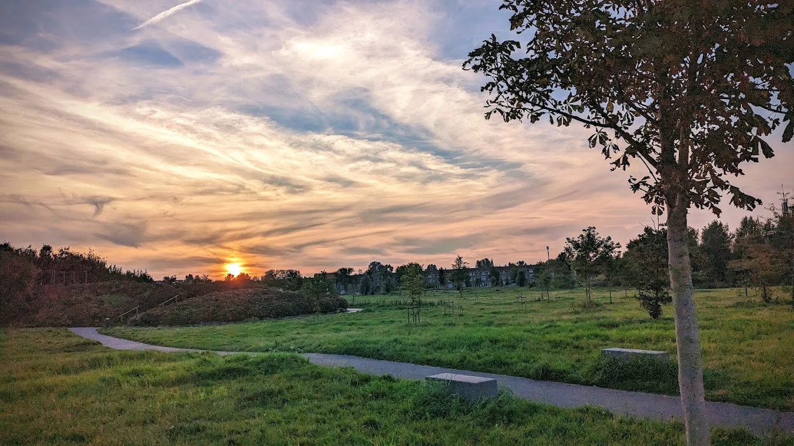
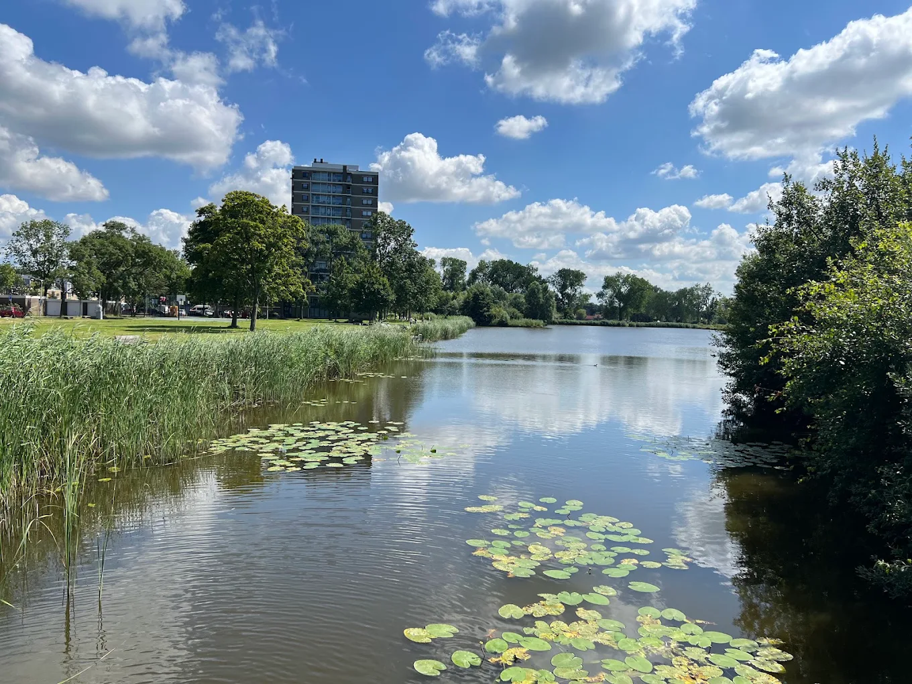
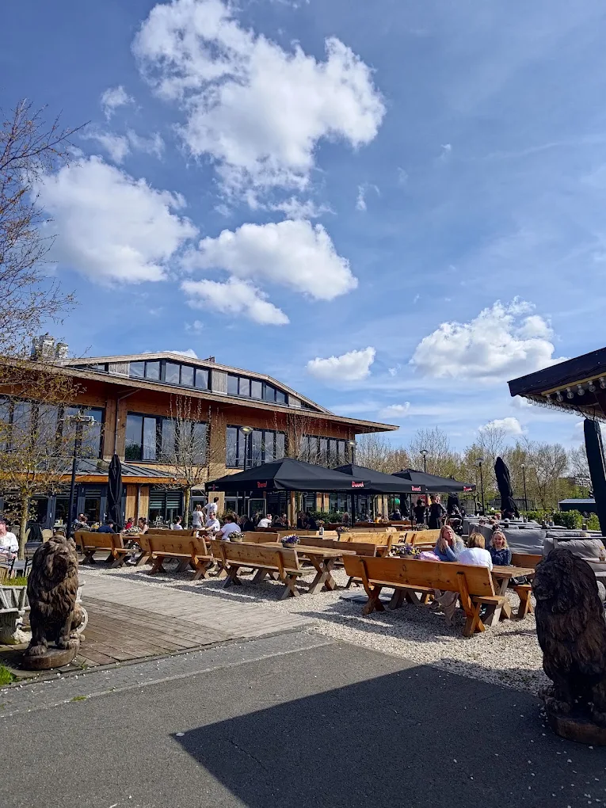

Voor wie is deze route?
Deze route is vooral geschikt voor mensen die tijdens hun wandeling even willen ontspannen. Het wandelen en de omgeving staan hierbij centraal.
Het Reinaldapark is een wandelplek voor mensen die vooral op zoek zijn naar rust en ontspanning. Je kunt hier op je eigen tempo wandelen en genieten van een groene omgeving.

Deze route is vooral geschikt voor mensen die tijdens hun wandeling even willen ontspannen. Het wandelen en de omgeving staan hierbij centraal.

Tijdens de wandeling kom je door verschillende groene delen van het park. Hierdoor voelt de wandeling rustiger aan dan een route door het centrum van Haarlem.

Na de wandeling kun je eventueel nog iets eten of drinken in de omgeving. Zo kun je van een rustige wandeling makkelijk een langer ontspannen uitje maken.